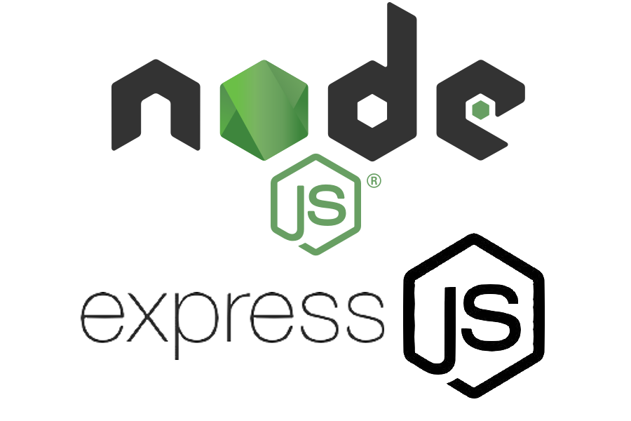
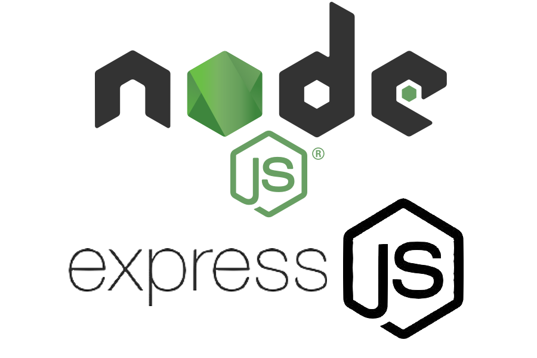

About me

Hi, I'm Raed.
I'm a passionate computer science student with a strong interest in web development. I enjoy creating intuitive, responsive, and efficient web applications using modern technologies. My goal is to continually improve my skills, contribute to impactful projects, and stay curious about the ever-evolving world of technology.
Feel free to connect with me or check out my projects below!
Download CVSkills


 



Projects
Skyrim
Member of a 5-person project team for the development of a web-based application that shows an interactive map of Skyrim. The project involved selecting and calculating the shortest route between two cities using the Dijkstra algorithm. Technologies used include React, JavaScript and CSS for the frontend, TypeScript and MongoDB for the backend, as well as Keycloak for authentication and REST APIs for communication. Gained knowledge includes teamwork in the framework of a larger development project, the use of GitLab for version control, creating issues for task management, implementing pipelines and CI/CD processes for continuous integration and deployment. These experiences have my ability to effective planning, team collaboration and implementation of complex functions greatly improved.
View on GithubShopping list
Developed a full-stack web application for the management of shopping lists using TypeScript, Node.js, Express, PostgreSQL and React. The application enables the creation, editing and prioritization of shopping lists and the management of articles. An integration of the Spoonacular API has been implemented to search recipes and automatically generate shopping lists based on ingredients. In addition the application supports dynamic prioritization, sorting and advanced search functions. To ensure API functionality, automated tests were implemented using Jest and Supertest.
View on GithubPassword strength checker
I have developed an innovative web application that allows users to test the strength of their passwords and learn how long it would take to crack them. The frontend was designed using HTML, CSS and JavaScript to provide a user-friendly and interactive interface. The backend, also implemented in JavaScript, uses Hashcat to analyze and crack hashed passwords. Via a real-time socket connection, the progress and results of the cracking process are transmitted live to the frontend, giving users immediate feedback.
View on GithubJewlery Store
Designed and developed a responsive and visually appealing landing page for "Mangata & Gallo," a fictional Austin-based jewelry store specializing in engagement, wedding, and anniversary pieces. The project utilized HTML5 for structure and CSS3 for styling, with a focus on modern web design principles and a minimalistic aesthetic. High-quality images and branding assets were seamlessly integrated, complemented by custom fonts (Playfair Display and Lora) and a cohesive color scheme. The layout features a clean navigation menu and sections to showcase featured products, ensuring an elegant user experience across devices through a mobile-first design approach.
View on GithubContact
I'd love to hear from you! Whether it's about a project, a collaboration, or just to say hi, feel free to get in touch.